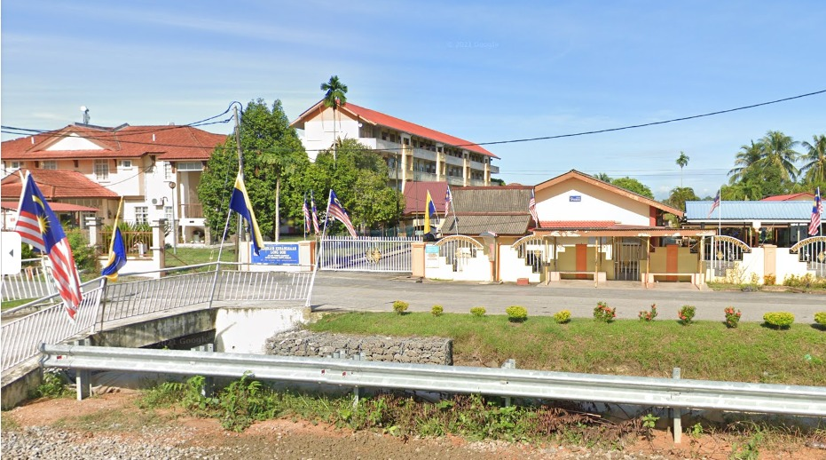

‚ÄúEducation is our passport to the future, for tomorrow belongs to the people who prepare for it today.‚Äù ‚Äì Malcolm Xüòç
MY PREVIOUS SCHOOLS

SEKOLAH RENDAH KEBANGSAAN LONG BOH
SEKOLAH MENENGAH KEBANGSAAN DATO'SHEIKH AHMAD
SEKOLAH MENENGAH KEBANGSAAN SYED SIRAJUDDIN
My first education started from kindergarten. I got my basic education from Tabika Kemas Alor Redis. Then I'm finished my primary school at Sekolah Rendah Kebangsaan Long Boh which is close to my house.
Then at the secondary level, I went to school at Sekolah Menengah Kebangsaan Dato Sheikh Ahmad which is a cluster school of excellence and applies the concept of 21st century learning from form one to form five.
Then after finishing form five, I continued my studies in form six at SMK Syed Sirajuddin, for taking a Malaysian secondary school certificate (STPM) and got a good pointer and got an offer at Universiti Teknologi Mara in the cost of library information management at UiTM Kesah Sungai Petani Campus in bachelor’s degree level.
| Institution | Certificate | Year Enrolled | Year Graduated |
| Tabika Kemas Alor Redis | Sijil Prasekolah | 2005 | 2006 |
| Sekolah Rendah Kebangsaan Long Boh | Ujian Penilaian Sekolah Rendah | 2007 | 2012 |
| Sekolah Menengah Kebangsaan Dato' Sheikh Ahmad |
Pentaksiran Tingkatan Tiga Sijil Pelajaran Malaysia |
2013 | 2017 |
| Sekolah Menengah Syed Sirajuddin |
Sijil Tinggi Persekolahan Malaysia |
2018 | 2020 |
| Universiti Teknologi Mara Cawangan Kedah |
Ijazah Sarjana Muda |
2021 | 2024 |
A LITTLE THROWBACK...
Form 6 graduation ceremony
Form 6 Excellent Student Council

My bestfriend and I while in high school>